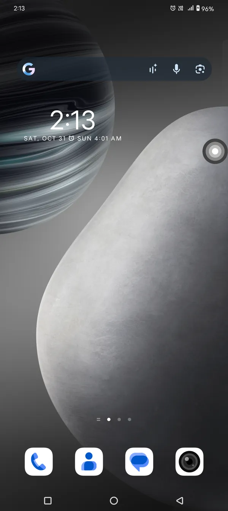
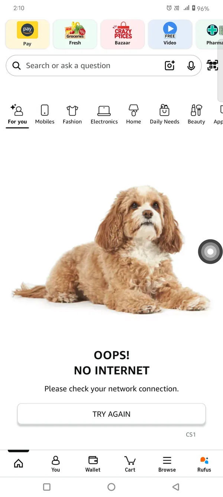
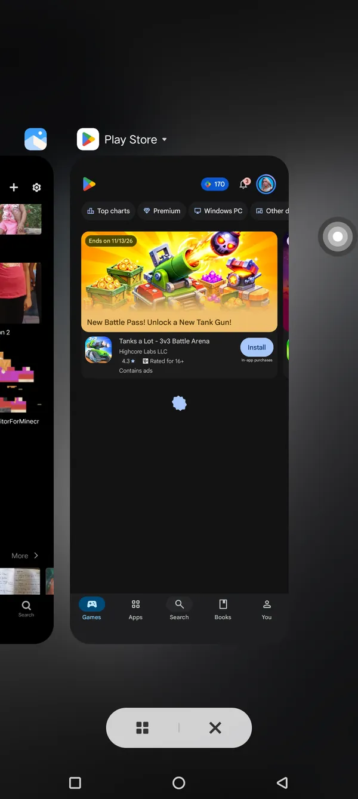
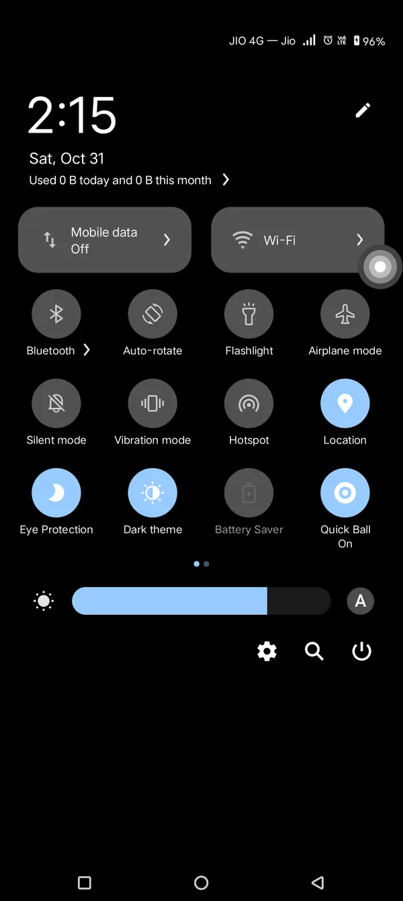
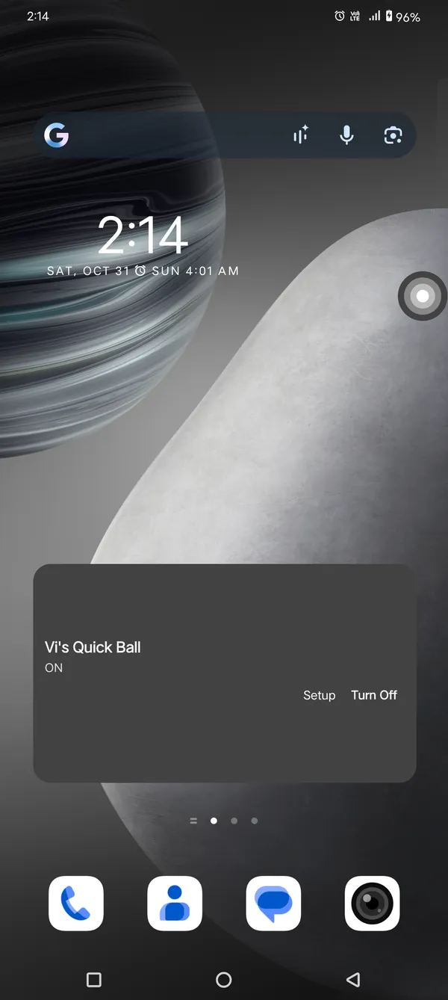
App version 1.0.1
Your essential controls.
Always within reach.
Vi's Quick Ball keeps everyday navigation close by. Tap, double-tap, or press and hold a floating ball to request Android's Back, Home, and Recent Apps actions. No ads.

Made for the moments in between
Four gestures. A little more reach.
Keep the actions you use most close at hand, wherever Android lets the ball appear.
- 01
Tap for Back
Request Android's Back action with one tap.
- 02
Double-tap for Home
Return to the Home screen with a quick double-tap.
- 03
Press for Recents
Ask Android to show Recent Apps. Availability can vary by device.
- 04
Drag and dock
Move the ball, then let it settle against the nearest screen edge.
- 05
Quick Settings tile
Use the standard Android tile after adding it from the tile editor.
- 06
Home-screen widget
Toggle Quick Ball from a widget on your home screen.

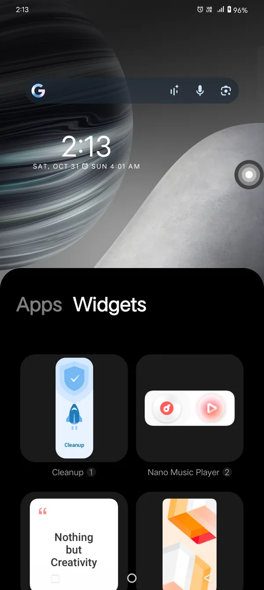


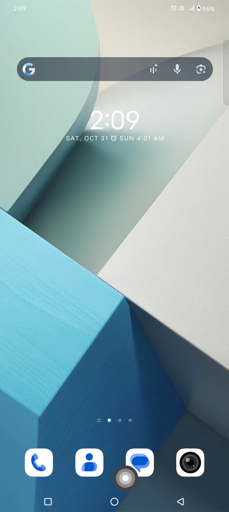


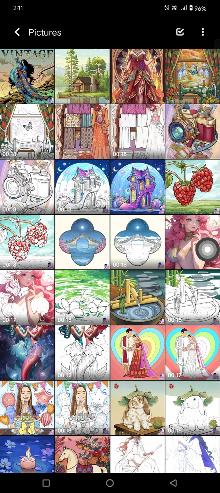


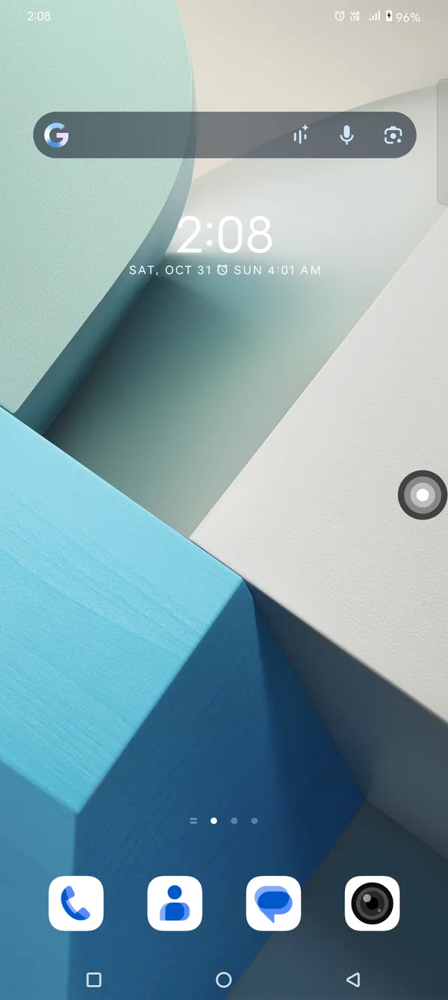


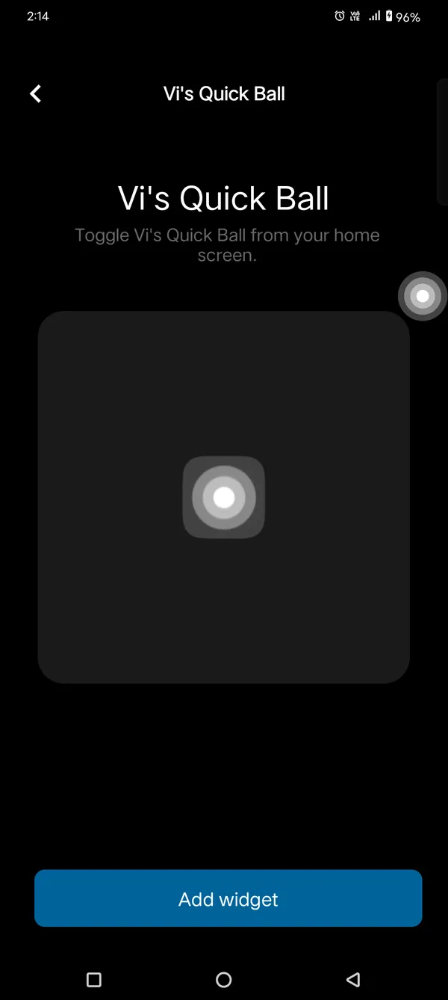


A clear, manual setup
You're in control from the start.
Quick Ball asks you to enable two Android permissions yourself. Nothing is switched on behind your back.
- 01
Allow the floating ball
Android's “Display over other apps” access lets the small overlay sit above ordinary apps.
- 02
Enable navigation gestures
Turn on Vi's Quick Ball in Accessibility settings so Android can receive the requested navigation actions.
- 03
Start when you're ready
Use the app, widget, or Quick Settings tile to switch the ball on or off.
Permissions, explained
Helpful access, with a clear purpose.
The overlay permission displays the ball. The Accessibility Service requests Back, Home, and Recent Apps when you use gestures, and checks window package/class metadata to detect system panels. It is configured not to retrieve window content. Read exactly what the app stores and how it works in the policy.
Read the Privacy Policy →Download
Get Vi's Quick Ball.
Version 1.0.1 is officially available on PhonePe Appstore.
View the PhonePe Appstore listing →
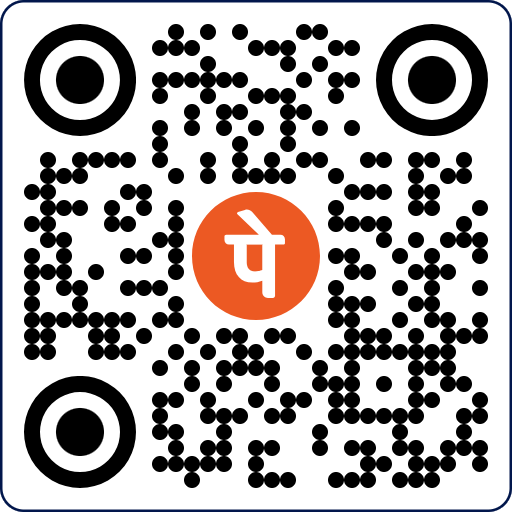